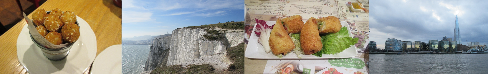

Hi there! My name's Sherry, and I'm currently a third year student at the
University of California, Berkeley, but this semester I am
studying at the University of Leeds. During my time here, I have
traveled to many new places and eaten a variety of foods that I want to share with everyone!
This decision to study abroad has made me a much more independent person and I'm glad to be able
to do things I've never done before. I also love meeting people from all over the world and enjoy
seeing the world from a new perspective. I decided to make this blog because I wanted to share
my experiences with my family and friends and for people who are interested in traveling. I hope
you will enjoy reading about my journeys. If you have any questions or comments, feel free to
leave one on my contact page!
-Sherry